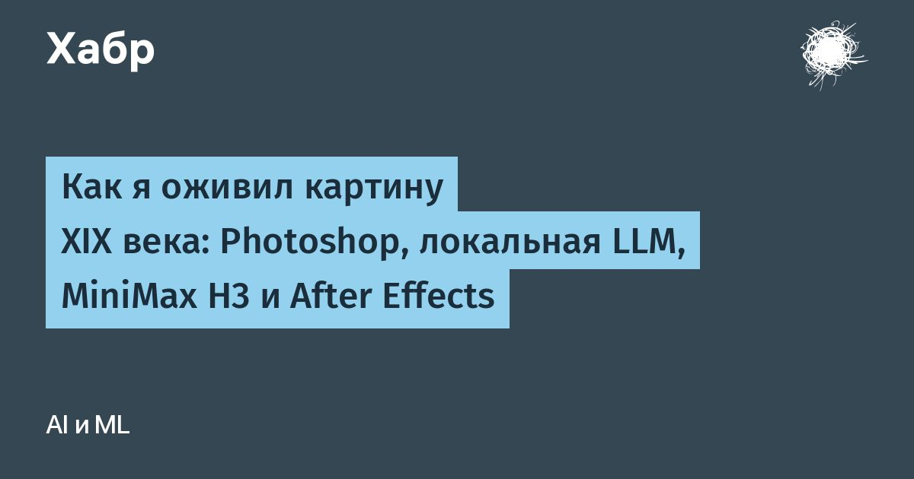

Как оживить историческую картину: поэтапная работа с ИИ-инструментами
Автор проекта разобрал полотно Альма-Тадемы о переправе через Березину на отдельные элементы, восстановил скрытые фрагменты фона и анимировал каждый объект независимо. Такой подход позволил сохранить композицию, стиль и историческую точность картины XIX века.
Почему цельная генерация не подходит для сложных сцен
На картине изображены десятки фигур, перекрывающих друг друга и взаимодействующих с окружением: солдаты держат бревна, стоят в воде, опираются на конструкции моста. Если передать всё полотно видеомодели единым запросом, она неизбежно изменит лица, одежду, архитектуру и направление движений, разрушая историческую достоверность сцены.
Поэтому выбран поэлементный метод: каждый персонаж и значимый объект выделяются на отдельный слой с сохранением исходных координат. Это позволяет анимировать фрагменты независимо и затем собрать их в единую композицию без ручной подгонки масштаба и положения в постпродакшене.

Подготовка в Photoshop: выделение и восстановление фона
В графическом редакторе каждый фрагмент выделяется с точностью до краев одежды и волос, переносится на отдельный слой без обрезки холста. Сохранение системы координат критически важно: при импорте в видеоредактор слои идеально накладываются друг на друга, исключая ошибки совмещения.
После удаления фигуры на её месте остаётся пустота, которую необходимо заполнить так, будто персонажа там никогда не было. Для этого применяется инпейнинг с учётом цветовой гаммы, направления мазков, фактуры холста и перспективы. Качество восстановления проверяется на стыках: любое несовпадение станет заметно при анимации, когда движущаяся фигура начнёт «плыть» относительно фона.

Работа с промтами через локальную языковую модель
Для каждого фрагмента формируется детальный запрос к видеогенератору. Вместо ручного написания используется локальная мультимодальная модель, которая получает базовое описание желаемого движения, изображение фрагмента и ограничения по сохранению композиции. На выходе формируется плотный промт на английском языке с указанием позы, взаимодействия с окружением, исторического контекста, статичной камеры и художественной палитры.
Такой подход исключает случайные интерпретации видеомодели: в промте фиксируются количество конечностей, характер шага, наличие реквизита в руках, соответствие движения физике воды или снега. Любое отклонение от заданных параметров становится основой для корректировки запроса и повторной генерации.
Видеогенерация и финальный композитинг
Анимация каждого фрагмента запускается отдельно через ComfyUI на модели MiniMax H3 с оптимизациями для ускорения. Результат оценивается не по эстетике, а по техническим критериям: сохранение исходной позы, отсутствие новых объектов, непрохождение конечностей через тела соседей, соответствие движений среде. Неудачные варианты отбраковываются, промты уточняются до пригодного результата.
На финальном этапе все анимированные слои собираются в After Effects. Зелёный фон, добавленный за персонажами на этапе подготовки, удаляется пипеткой, открывая подвижные нижние слои. Итоговая сцена сохраняет композиционную целостность оригинала, оживляя исторический кадр без потери авторского стиля художника.
Проверка согласованности кадров и устранение артефактов
Перед финальным рендером стоит обсудить с техническим художником или ведущим композитором критерии приёмки: стабильность краёв масок, отсутствие дрожания текстур, соответствие цветовой температуры и направления света между сгенерированными фрагментами и статичным фоном. Подготовка к проверке включает рендер коротких тестовых последовательностей для каждого анимированного слоя отдельно, постраничное сравнение с референс-кадром в режиме разницы и настройку превью в After Effects с включённым контролем альфа-каналов. Такой проход позволяет выявить зоны, где инпейнинг фона не совпадает с движением фигуры, или где видеомодель вводит собственную интерпретацию фактуры мазка.
Подход не подойдёт для работ с сильной деформацией перспективы, толстым импасто, где рельеф красок создаёт непредсказуемые блики, или для изображений с критическими повреждениями в ключевых зонах композиции. Результат зависит от точности начального разделения слоёв, качества промтов для каждого типа материала — воды, ткани, дерева, кожи — и навыка ручной доработки артефактов на стадии композитинга. Даже при идеальной генерации часто требуется пошаговая коррекция масок, подстройка градиентов и локальная замена проблемных кадров на интерполированные варианты.
Коротко: Поэлементная анимация исторических картин требует тщательной подготовки исходников, точного промт-инжиниринга и многократной проверки генераций. Только последовательный контроль каждого этапа позволяет оживить полотно без искажения его художественной и исторической ценности.
Какие еще исторические работы стоило бы оживить подобным способом и какие технические вызовы это создаст?